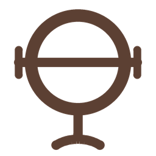

One parent brand, Void, with four product editions that share a single mark: News, History, Weekly, Vision. The Sigil is not decoration. It is a diagram of what the product does. Every rule in this book protects that promise.
Coverage ring — the breadth of sources. A hollow lens, the analytical "void" you look through. The O in VOID.
Level balance beam with |-| end ticks — the multi-axis bias reading. Level means balanced. In motion it sweeps the lean spectrum.
Foot (post and base) — the instrument's stand, the method. Measurement moves; the method does not. It never tilts.
When the beam sweeps in the animated mark it crosses blue, green, red, the same spectrum the product paints across every story.

Minimum clear space on all sides equals the height of the Sigil ring (its diameter). Nothing — type, image edge, another logo — enters that zone.
| Asset | Digital min | Print min |
|---|---|---|
| Icon (Sigil) | 16 px | 8 mm |
| Horizontal lockup | 120 px wide | 24 mm wide |
| Wordmark | 100 px wide | 20 mm wide |
Playfair Display (editorial) · Inter (structural) · Barlow Condensed (meta) · IBM Plex Mono (data)
The one-line rule: serif carries meaning, mono carries measurements, and the two never trade jobs.
Bad: "Tensions are rising significantly between the two nations."
Good: "Both countries recalled their ambassadors within 48 hours. Neither has done that since 1979."
Bad: "The Partition of India was a complex process that began with British colonial rule and led to two nations in 1947."
Good: "A lawyer who'd never been to India drew the border in five weeks. 15 million crossed it."
They are an AI tell. Rewrite as two short sentences, or use a comma, colon, or parentheses. The single exception is spoken audio scripts, where an em dash is a breath mark for text-to-speech.
| Brand | Accent | Voice register |
|---|---|---|
| Void News | #B26F52 | The flagship. Daily, measured, the record. |
| Void History | #5C4033 | Archival, long-view, multi-perspective. |
| Void Weekly | #B91C1C | Magazine. Argued, essayistic, the week's through-line. |
| Void Vision | #946B15 | The umbrella and YouTube. The bare Sigil is the master mark. |